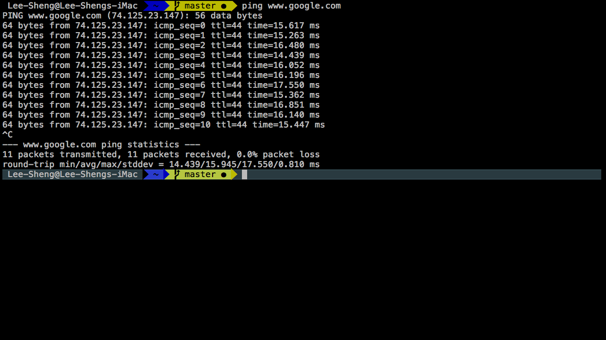
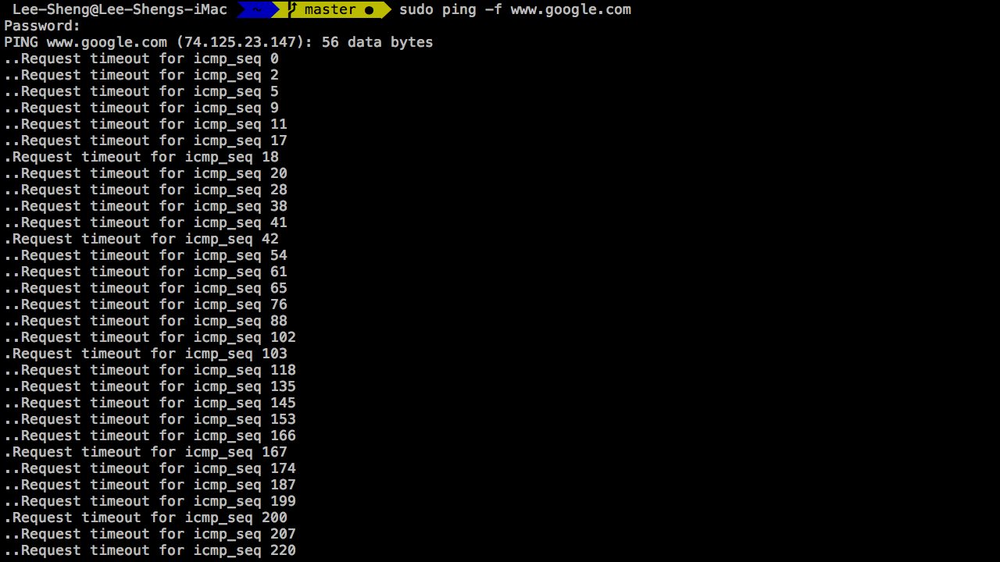
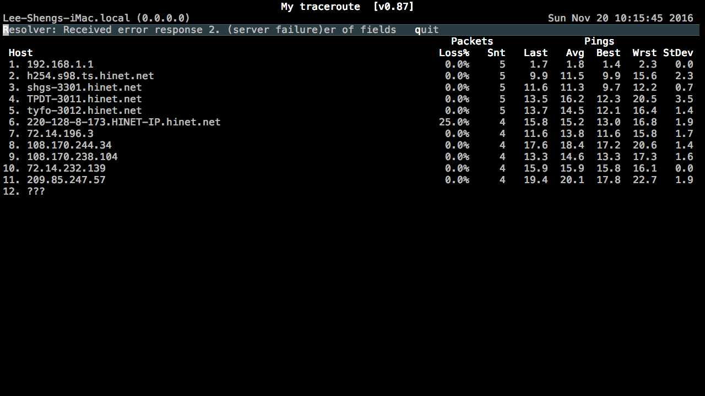
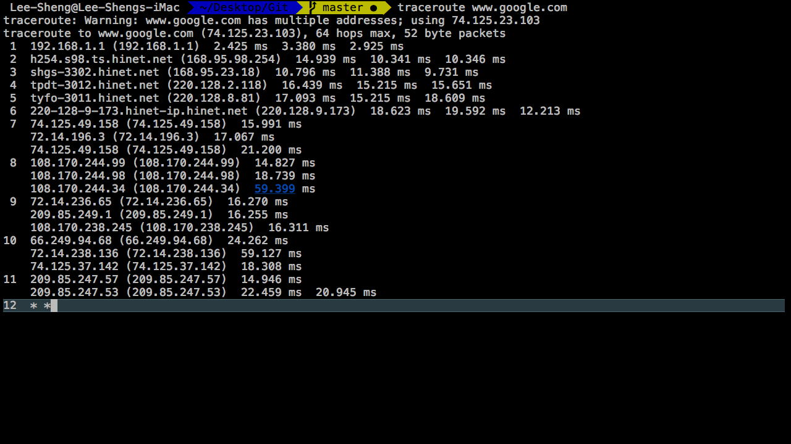

Mac network diagnostic tools….
1.Ping
Synopsis
- The ping command is usually used as a simple way for verify that the mac computer can communicate over the network with one other。

- In above example, the ping command is pinging www.google.com with each ICMP message. so it tells us currently our network is good and google is good too.

- Don’t try to use -f (Flood) option , some firewalls or hosts can believe it’s a DoS attack and drop the icmp packets silently.
2.MTR
Synopsis
- MTR combines the functionality of the Traceroute and Ping 。
Install
|
|
Export environment variable for further use
|
|
MTR Sample

- Above you can see all packets of data travelling from my host to destination host。Unfortunately, I don’t want to dig this here。 If you want learn more，please go here 。
3.Traceroute
- Traceroute print the route packets trace to network host。

Above you can see your all packets of data travelling just like MTR， but one of the different part that you can see more details about what is going on inside the routhe。 See No.7 ~ No.11 at above sample。
more reference DigitalOcean , here.
最后更新： 2018年02月16日 16:43
原始链接： http://stephenchen.com/2016/11/18/Mac-Network-Diagnostic-Tools/